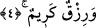
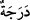
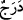
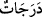
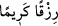
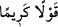

ürperme, ihlas ve tevekkül gibi kalbe ait güzel amelleri zikretmiştir. Ardından kalbî
amellerin mihengi olan namaz ve sadaka gibi âzâlar ile yapılan amellere geçerek şöyle
buyurmuştur:
“Onlar namazlarını” abdestiyle, rükûsuyla ve secdesiyle kendi vakitlerinde
“dosdoğru kılan ve kendilerine rızık olarak verdiklerimizden” onlara verdiğimiz
mallardan Allah’a itaat yolunda “harcayan kimselerdir.” Burada Allah Teâlâ’nın namaz
ve zekâtı özellikle zikretmesi, onların büyük bir ehemmiyete sahip olduğunu göstermek
ve durumlarını pekiştirmek içindir.
4. İşte onlar gerçek müminlerdir. Onlar için Rab’leri katında nice dereceler,
bağışlanma ve tükenmez bir rızık vardır.
“İşte onlar” kalb ve kalıpla ilgili amelleri tam olarak yerine getirenler “gerçek
müminlerdir.” Hakiki iman sahibidirler. Çünkü onlar imanlarını salih amelle
birleştirerek tahkikî hale getirmişlerdir.
“Onlar için Rab’leri katında nice dereceler” ikramlar, O’na yakınlık, mertebelerinin
yüksek olması veya amellerine göre cennette yüksek dereceler vardır.
Envârü’l-meşârik adlı eserde denilmiştir ki: “” kelimesi basamak mânâsında
olursa çoğulu “” olarak; mertebe ve tabaka mânâsında olunca da “” olarak
gelir.
Günahları için “bağışlanma ve tükenmez bir rızık” kazanıp elde etme zahmetinden
uzak, hesap korkusu olmayan büyük, dünya nimetlerinin aksine hiç bitmeyip arkası
kesilmeyen bir rızık “vardır.”
el-Kâmûs’da şöyle denilmiştir: “” çok rızık, “” ise yumuşak ve güzel
söz demektir. İkram ve kerem de bir şeyi tazim etmek ve onu noksanlıklardan tenzih
etmek anlamlarına gelir.
İmam Kuşeyrî (k.s.) buyurmuştur ki: “Rızk-ı Kerîm”, kendisine rızık vereni “Râzık’ı”
görmekten alıkoymayan rızıktır.”
Sen rızık sebebiyle rızık verenden geri kalma
Sebepten geç müsebbibi âşikâre gör
Her hayır ve şer, sebebini yaratandan gelir
Sebeb ve vâsıtalardan değil, babacığım
Göz sağlam oldu mu aslı görür
İnsan şaşı olursa aslı değil fer‘i görür